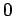

Die Gleichung der Zissoide
| (2.217a) |
in Parameterform
| (2.217b) |
und in Polarkoordinaten
| (2.217c) |
beschreibt den geometrischen Ort aller Punkte P mit der Eigenschaft: P liegt auf einem Strahl durch , und es gilt:
| (2.218) |
Dabei ist M der zweite Schnittpunkt des Strahles 0P mit dem erzeugenden Kreis um mit dem Radius und Q der Schnittpunkt des Strahles 0P mit der Asymptote .
Der Flächeninhalt zwischen der Kurve und Asymptote berechnet sich zu .